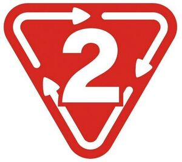

Trade Mark Journal No.2026/010 6 March 2026
WO0000001896039 (9,35,36,42)
Office of origin: Japan
Date of International Registration:15 July 2025
Date of designation in the UK:
15 July 2025

The mark contains the colours red and white.
The arrows and symbol "2" in the inverted triangle are in white, whereas the rest part of the inverted triangle is in red.
International priority date claimed: 19 March 2025
(Japan)
- Class 9
- Telecommunication machines and apparatus; computer programs; downloadable programs for smartphones and mobile information terminals; computer application software for mobile phones; application software; application software for computers; computer application software for mobile information terminals; computers; computer peripheral devices; computer hardware; data processing apparatus; tablet computers; electronic control apparatus; computer components and parts; downloadable still images and videos; downloadable image and music files; downloadable images, videos, and movies; video-recorded DVDs, video disks and video tapes; electronic publications; smartphones; cases for smartphones; personal digital assistants in the shape of a watch; game programs for home video game machines; electronic circuits and CD-ROMs recorded with programs for hand-held games with liquid crystal displays; media and video files storing animated cartoons; audio- and video-receivers; audio interfaces; audio mixers; bar code readers; cryptocurrency hardware wallets; downloadable software for generating cryptographic keys for receiving and spending cryptocurrency; downloadable computer software for managing crypto asset transactions using blockchain technology; downloadable computer software applications for minting non-fungible tokens [NFTs]; credit card terminals; data processing apparatus; devices for the projection of virtual keyboards; digital signs; downloadable application software for virtual environments; downloadable emoticons for cell phones; electronic tags for goods; electronic shelf labels; integrated circuit cards [smart cards]; interactive touchscreen terminals.
- Class 35
- Order management for commercial transactions; order and order reception management of goods; sales management of goods; inventory management of goods; operating and managing online shopping mall businesses; providing consulting services and information on operation and management of online shopping mall businesses; providing business support and advice to business owners of Internet shops; providing consulting services and information on corporate management; business intermediary services for negotiating of business contracts; presentation of goods on communication media, for retail purposes; business intermediary services for carrying out administrative processing related to computer-based order, order reception, and order placement of goods; intermediary services for sale and purchase contracts of goods in electronic commerce transactions; commercial intermediary services relating to commercial transactions; providing online markets for buyers and sellers of goods and services; sales promotion of goods and services through the customer loyalty programmes by issuing, managing and settling coupons or loyalty points; providing information on businesses; business intermediary services for sale and purchase contracts of goods via online shopping malls; administration of consumer loyalty programs; advertising by demonstration of goods; online advertising on computer networks; direct mail advertising; advertising by mail order; arranging and conducting of commercial events; conducting of auctions; compiling indexes of information for commercial or advertising purposes; consumer profiling for commercial or marketing purposes; search engine optimization for sales promotion.
- Class 36
- Appraisal of secondhand goods and provision of information related to such appraisal; appraisal of antiques and provision of information related to such appraisal; appraisal of works of art and provision of information related to such appraisal; appraisal of diamonds, gemstones and precious metals and provision of information related to such appraisal; payment settlements for the purchases of goods and services via electronic communication networks; payment settlements on behalf of users of electronic money via electrical communication networks; fund transfer services; on-line bill payment services; issuance of prepaid electronic money; monetary transfer services; providing information relating to issuance of prepaid electronic money; issuing pre-paid payment instruments; issuing prepaid cards (issuing third-party issue type prepaid payment instruments); credit card payment processing services; electronic credit card transactions; processing credit card transactions; electronic processing of payments.
- Class 42
- Providing computer programs on data networks; providing computer programs for managing electronic payment systems; leasing of server storage space for electronic bulletin boards on the Internet; providing application software online (SaaS); providing computer software platforms (PaaS); providing search engines; design, development or maintenance of computer programs; design, development or maintenance of application software; website hosting; hosting of platforms on the Internet or other communication networks; rental of computers; design, development of computer systems, advisory services relating thereto; research, development and testing of computer software; analysis of computer systems; design services; design and development of computer hardware, computer software and databases; blockchain as a service [BaaS]; user authentication services using blockchain technology; computer programming of smart contracts on a blockchain; hosting software platforms for virtual reality-based work collaboration; hosting virtual environments; user authentication services using single sign-on technology for online software applications; user authentication services using technology for e-commerce transactions; online identification and verification of users identity to third parties on the Internet.
GEO HOLDINGS CORPORATION
Representative: Zacco UK Ltd, Regus, Building 2 Guildford Business Park Road Guildford Surrey GU2 8XG UNITED KINGDOM